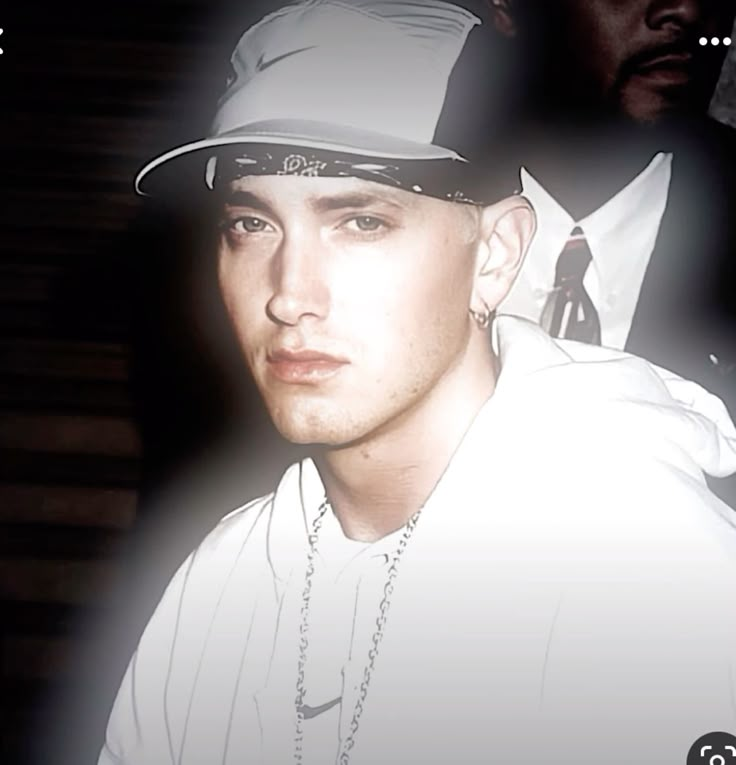
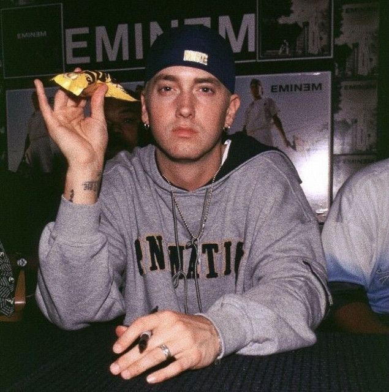

EMINEM
| повне ім'я: | Маршалл Брюс Метерз III |
|---|---|
| Сценічні псевдоніми: | Eminem (M&M), Slim Shady |
| Дата народження: | 17 жовтня 1972 року. |
| Місце народження: | Сент-Джозеф, штат Міссурі, США. |
улюблені пісні та альбоми (деякі) >>>
Сім'я та ранні роки
Дитинство Маршалла було складним і нестабільним. Батько, Маршалл Брюс Метерз-молодший, покинув сім'ю, коли синові було лише півтора року, і ніколи з ним не спілкувався. Мати, Дебора «Деббі» Нельсон, постійно переїжджала з місця на місце в пошуках роботи, поки вони нарешті не осіли в Детройті, штат Мічиган.
Більшу частину юності Маршалл провів у переважно афроамериканському районі Детройта, де часто ставав об'єктом булінгу та нападів. Одного разу після жорстокого побиття в школі він пролежав у комі кілька днів. Ці події, а також складні стосунки з матір'ю, згодом стали ключовими темами його пісень.
Захоплення репом почалося у 14 років. Попри расові бар’єри в хіп-хоп культурі того часу, Маршалл брав участь у фристайл-батлах, де завоював повагу завдяки своєму ліричному таланту. У 17 років він остаточно залишив школу після того, як тричі залишався у дев'ятому класі через прогули та низьку успішність.
Початок кар'єри (1990-ті)
Перші кроки в музиці Маршалл робив у складі гуртів (наприклад, Soul Intent). У 1996 році він випустив дебютний сольний альбом "Infinite", який виявився комерційним провалом. Критики звинувачували його в копіюванні стилю інших реперів (Nas, AZ).
Цей період був найважчим: народження доньки Гейлі, відсутність грошей та проблеми з наркотиками призвели до спроби самогубства. Проте невдача змусила його створити персонажа Slim Shady — злого, саркастичного і безжального персонажа, який дозволив йому виплеснути всю лють. У 1997 році він випускає "The Slim Shady EP", який потрапляє до рук легендарного продюсера Dr. Dre.
Світовий успіх та пік популярності (1999–2005)
Співпраця з Dr. Dre стала поворотною точкою.
- The Slim Shady LP" (1999): Альбом став мультиплатиновим і приніс Емінему першу премію «Греммі». Світ дізнався про «білого репера», який не боявся шокувати.
- "The Marshall Mathers LP" (2000): Вважається одним із найкращих альбомів в історії хіп-хопу. Він містив такі хіти як "The Real Slim Shady" та "Stan". Альбом розійшовся тиражем понад 1.7 млн копій за перший тиждень.
- "The Eminem Show" (2002): Підтвердив статус Емінема як головної зірки світової сцени. У цей же час він знявся у напівавтобіографічному фільмі «Восьма миля», за саундтрек до якого ("Lose Yourself") отримав премію «Оскар».

Повернення та пізня кар'єра (2009 — до сьогодні)
Після тривалої перерви Емінем повернувся з альбомами "Relapse" (2009) та "Recovery" (2010). Останній став найбільш продаваним альбомом року у світі, показавши трансформацію репера у зрілу особистість.
Наступні роки ознаменувалися виходом таких платівок як "The Marshall Mathers LP 2" (2013), "Revival" (2017), "Kamikaze" (2018) та "Music to Be Murdered By" (2020). У 2024 році він випустив концептуальний альбом "The Death of Slim Shady (Coup de Grâce)", де символічно «вбив» своє старе альтер-его.

Спадщина та досягнення
- Рекорди: Емінем — один із найбільш продаваних музичних артистів усіх часів (понад 220 мільйонів записів).
- Нагороди: 15 премій «Греммі», премія «Оскар», включення до Зали слави рок-н-ролу (2022).
- Вплив: Він відкрив двері в хіп-хоп для багатьох білих виконавців і довів, що технічна складність тексту (складні рими, гра слів) може бути комерційно успішною. Журнал Rolling Stone назвав його «Королем хіп-хопу».